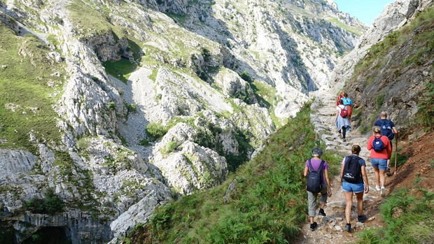
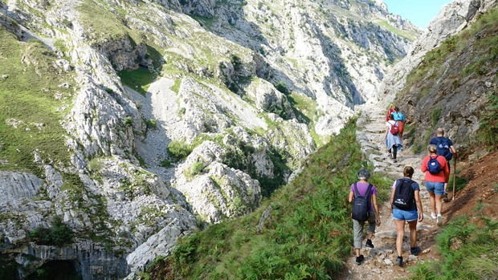

EXTENSIÓN
Son 167767 Hectáreas

FECHA DE DECLARACIÓN
28/07/1989
UNIDADES AMBIENTALES
Media Montaña Bética
RUTAS
Cádiz por la TransAndalus, Ruta del Vino y el Brandy Marco de Jerez.
Son 167767 Hectáreas
28/07/1989
Media Montaña Bética
Cádiz por la TransAndalus, Ruta del Vino y el Brandy Marco de Jerez.
